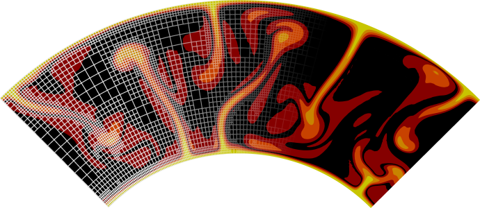

| Download! » |
ASPECT is open source and available for free! |
|
| Manual! » | The online manual explains most of what you may want to know about ASPECT. | |
| Parameters! » | ASPECT is controlled by input parameters. Find all available options. | |
| Help! » | Find more information on ASPECT in general and where to ask questions. | |
| Participate! » | ASPECT is a community project. We welcome all who want to participate in any way! | |
| Cite! » | Are you using ASPECT in your work? Please give us credit in your publication. Thanks! | |
| Publications! » | Publications describing the incredible work you all do with ASPECT. Let us know about yours! |

ASPECT is a code to simulate problems in computational geodynamics. Its primary focus is on the simulation of processes in the earth's mantle, but its design is more general than that. The primary aims developing ASPECT are:
- Usability and extensibility: Simulating the Earth and other planets is a difficult problem characterized not only by complicated and nonlinear material models but, more generally, by a lack of understanding which parts of a much more complicated model are really necessary to simulate the defining features of the problem. This uncertainty requires a code that is easy to extend by users to support the community in determining what the essential features of convection in the earth's mantle are.
- Modern numerical methods: We build ASPECT on numerical methods that are at the forefront of research in all areas -- adaptive mesh refinement, linear and nonlinear solvers, stabilization of transport-dominated processes. This implies complexity in our algorithms, but also guarantees highly accurate solutions while remaining efficient in the number of unknowns and with CPU and memory resources.
- Parallelism: Many convection processes of interest are characterized by small features in large domains -- for example, mantle plumes of a few tens of kilometers diameter in a mantle almost 3,000 km deep. Such problems require hundreds or thousands of processors to work together. ASPECT is designed from the start to support this level of parallelism.
- Building on others' work: Building a code that satisfies above criteria from scratch would likely require several 100,000 lines of code. This is outside what any one group can achieve on academic time scales. Fortunately, most of the functionality we need is already available in the form of widely used, actively maintained, and well tested and documented libraries. Thus, ASPECT builds immediately on top of the deal.II library for everything that has to do with finite elements, geometries, meshes, etc.; and, through deal.II on Trilinos for parallel linear algebra and on p4est for parallel mesh handling.
- Community: We believe that a large project like ASPECT can only be successful as a community project. Every contribution is welcome and we want to help you so we can improve ASPECT together.
ASPECT is published under the GNU GPL v2 or newer license.
Forum and Contact
The primary means of communicating with other ASPECT users and developers is in our ASPECT forum.
Bug reports can be submitted on our github page.
Send an email to one of the principal developers if you have questions that are not appropriate for a public and archived forum.
We appreciate all comments and suggestions on ASPECT and welcome active community discussions. Keep in mind that in order to maintain a respectful and collaborative community, we reserve the right to moderate all comments that violate our Code of Conduct.
Past Tutorials
Ada Lovelace Modeling workshop, September 1-6, 2024, Sete, France
Seoul National University, 2022, Seoul, Korea
CIG Tectonics Modeling Tutorial, July 20-24, July, 2020, Virtual
CGU/CIG meeting, June 10-14, 2018, Niagara Falls, Canada
CIDER summer program, July 9 to August 3, 2018, Santa Barbara, California, USA
EON-ELSI Winter School, January 22 to February 2, 2018, Tokyo, Japan
Deep Earth Systems PhD Course, October 2-13, 2017, Aarhus University, Aarhus, Denmark
University of the Chinese Academy of Sciences, June 20-28, 2017, Beijing, China
CIG All Hands Meeting, June 20-22, 2016, Davis, California, USA
CIDER, June 22 to August 1, 2014, Santa Barbara, California, USA
ELSI Summer School, August 1-2, 2014, Tokyo, Japan
GeoMod, September 4-5, 2014, Potsdam, Germany